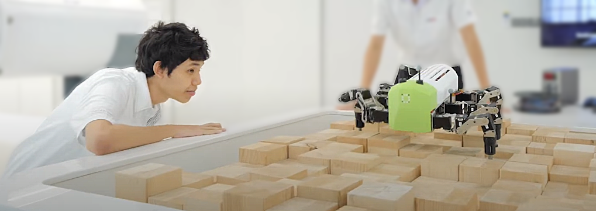

Publication
Thesis
- Arthicha Srisuchinnawong (2023), Online Continual and Interpretable Robot Locomotion Learning Framework — Multiple rings to learn them all, One moment to finish them, M.Sc. thesis, University of Southern Denmark, Odense, Denmark. Video1 Video2 Video3
- Arthicha Srisuchinnawong (2018), The Development of Gecko Robot Locomotion on Uneven Surface using an Artifcial Hormone Mechanism, B.Eng. thesis, Institute of Field Robotics, King Mongkut’s University of Technology Thonburi, Bangkok, Thailand. Poster
Journal Article & Conference Proceedings
-
Arthicha Srisuchinnawong, and Poramate Manoonpong (2025). Gain Tuning Is Not What You Need: Reward Gain Adaptation for Constrained Locomotion Learning. Robotics: Science and Systems.
Paper Poster Video1 Video2 Video3 Code -
Arthicha Srisuchinnawong, and Poramate Manoonpong (2025). Growable and Interpretable Neural Control with Online Continual Learning for Autonomous Lifelong Locomotion Learning Machines. International Journal of Robotics Research.
Paper Video1 Video2 Video3 Video4 Code -
Arthicha Srisuchinnawong, and Poramate Manoonpong (2025). An Interpretable Neural Control Network with Adaptable Online Learning for Sample Efficient Robot Locomotion Learning. IEEE Transactions on Neural Networks and Learning Systems. DOI: 10.1109/TNNLS.2025.3552793.
Paper Video Code -
Supapitanon Krongkaew, Tanyaporn Patathong, Chaicharn Akkawutvanich, Arthicha Srisuchinnawong, Worachit Ketrungsri, Poramate Manoonpong, Patarawan Woratanarat, and Chanika Angsanuntsukh (2025). Comprehensive multi-metric analysis of user experience and performance in adaptive and non-adaptive lower-limb exoskeletons. PloS one 20, no. 1. DOI: 10.1371/journal.pone.0313593.
Paper Code -
Arthicha Srisuchinnawong, Jonas Bæch, Marek Piotr Hyzy, Tsampikos Kounalakis, Evangelos Boukas, and Poramate Manoonpong (2024). Multiple Proactive Behavior Learning of Mobile Robots for Smooth and Safe Navigation. IEEE/RSJ International Conference on Intelligent Robots and Systems. DOI: 10.1109/IROS58592.2024.10802071
Paper Poster Video Code - Woramath Nantareekurn, Binggwong Leung, Arthicha Srisuchinnawong, Jettanan Homchanthanakul, Suppachai Pewkliang, and Poramate Manoonpong (2024). POMA : Propagation-based Obstacle negotiation control for Multi-segment Adaptation. the 27th issue of the International Conference Series on Climbing and Walking Robots and the Support Technologies for Mobile Machines (CLAWAR). DOI: 10.1007/978-3-031-70722-3_22 Paper Video
- Arthicha Srisuchinnawong, Kitti Phongaksorn, Wasuthorn Ausrivong, and Poramete Manoonpong. (2023) Adaptive Bipedal Robot Walking on Industrial Pipes under Neural Multimodal Locomotion Control: Toward Robotic Out-pipe Inspection. IEEE/ASME Transactions on Mechatronics. DOT: 10.1109/TMECH.2023.3293950 Paper Video
- Arthicha Srisuchinnawong, Chaicharn Akkawutvanich, and Poramate Manoonpong. (2023) Adaptive Modular Neural Control for Online Gait Synchronization and Adaptation of an Assistive Lower-Limb Exoskeleton, IEEE Transactions on Neural Networks and Learning Systems. DOI: 10.1109/TNNLS.2023.3263044. Paper Video Code
- Kanut Tarapongnivat, Run Janna, Worameth Nantareekurn, Wasuthorn Ausrivong, Arthicha Srisuchinnawong, Naris Asawalertsak, Suppachai Pewkliang, and Poramate Manoonpong. (2023) Hybrid Omnidirectional Wheeled Climbing Robot with an Electromagnet for Inspection , the 26th issue of the International Conference Series on Climbing and Walking Robots and the Support Technologies for Mobile Machines (CLAWAR). DOI: 10.1007/978-3-031-47269-5_10. Paper Video
-
Sujet Phodapol, Thirawat Chuthong, Binggwong Leung, Arthicha Srisuchinnawong, Poramate Manoonpong, and Nat Dilokthanakul (2021) GRAB: GRAdient-Based Shape-Adaptive Locomotion Control, IEEE Robotics and Automation Letters. DOI: 10.1109/LRA.2021.3137555.
Paper Video Code - Arthicha Srisuchinnawong, Jettanan Homchanthanakul, and Poramate Manoonpong (2021) NeuroVis: Real-time Neural Information Measurement and Visualization of Embodied Neural Systems, Front. Neural Circuits. DOI: 10.3389/fncir.2021.743101. Paper Video Code
- Arthicha Srisuchinnawong, Bingcheng Wang, Donghao Shao, Potiwat Ngamkajornwiwat, Zhendong Dai, Aihong Ji, and Poramate Manoonpong (2021) Modular Neural Control for Gait Adaptation and Obstacle Avoidance of a Tailless Gecko Robot, Journal of Intelligent and Robotic Systems (JINT) 101, 27, DOI: https://doi.org/10.1007/s10846-020-01285-y. Paper Video
- Arthicha Srisuchinnawong, Donghao Shao, Potiwat Ngamkajornwiwat, Pitiwut Teerakittikul, Zhendong Dai, Aihong Ji, and Poramate Manoonpong (2019) Neural Control for Gait Generation and Adaptation of a Gecko Robot, the 19th International Conference on Advanced Robotics (ICAR). DOI: 10.1109/ICAR46387.2019.8981580. Paper Video
- Arthicha Srisuchinnawong, Bawornsak Sakulkueakulsuk, and Warasinee Chaisangmongkon (2018) Word Recognition in Captured Images by CNN Trained with Synthetic Images, International Computer Science and Engineering Conference (ICSEC), DOI: 10.1109/ICSEC.2018.8712759. Paper Video

Patent
- Poramate Manoonpong, Arthicha Srisuchinnawong, Kitti Phongaksorn, Wasuthorn Ausrivong, Pong Kosanant, Thutchai Kasemwarapach, A Method and System for Controlling Motion of a Climbing Robot, Innovation Patent, PCT International Application No. PCT/IB2021/060011, Filing Date: 29 October 2021.
- Poramate Manoonpong, Kitti Phongaksorn, Arthicha Srisuchinnawong, Nat Dilokthanakul, Pong Kosanunt, Thutchai Kasemwarapach, Surface Climbing Robot, Petty Patent Filing No: 2103002981, Filing Date: 12 October 2021.
- Poramate Manoonpong, Arthicha Srisuchinnawong, Kitti Phongaksorn, Naris Asawalertsak, Pong Kosanunt, Thutchai Kasemwarapach, Robot Foot Assembly Set, Petty Patent Filing No: 2103002850, Filing Date: 30 September 2021.
update 3 Jul 2025